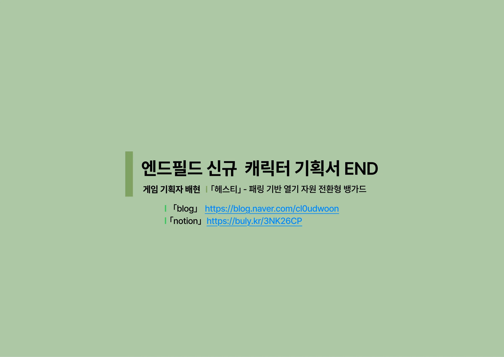

ARKNIGHTS: ENDFIELD — NEW OPERATOR PROPOSAL
파티의 문제점을 찾아내고,
그 약점을 메우는 캐릭터를 설계하다
「헤스티」 — 게임 「명일방주: 엔드필드」의 파티를 분석해, 부족한 역할을 메우도록 설계한 신규 6성 캐릭터 기획서입니다.

「헤스티」 — 게임 「명일방주: 엔드필드」의 파티를 분석해, 부족한 역할을 메우도록 설계한 신규 6성 캐릭터 기획서입니다.
이 문서는 역기획으로 시작합니다. 레바테인 열기 파티의 딜 사이클을 분해해 "고점은 있으나 실행 안전장치가 없다"는 문제를 찾고, 그 답으로 적 공격을 회피 대상이 아니라 전투 자원으로 바꾸는 선택 구조를 가진 뱅가드를 설계했습니다.
「헤스티」는 아크나이츠: 엔드필드의 열기 파티를 위한 신규 6성 뱅가드 제안입니다. 창과 방패를 쓰는 창방패병으로, 핵심 경험은 한 문장입니다 — 적의 공격을 회피하지 않고 패링해서 전투 자원으로 바꾼다.
이 문서는 캐릭터를 먼저 그리고 이유를 붙인 기획이 아닙니다. 순서가 반대입니다. 기존 열기 파티의 딜 사이클을 분해하고(분석), 실패 지점을 표로 정리하고(진단), 그 공백을 정확히 메우는 스킬셋을 설계했습니다(제안). 그래서 이 페이지도 같은 순서로 읽히도록 배치했습니다 — 근거를 먼저, 헤스티는 나중에 나옵니다.
범위는 전투 콘텐츠로 한정합니다. AIC·기지 생산 재능은 원본 문서에서도 범위 밖으로 명시했습니다.
헤스티가 필요한 이유는 원작 관측에서 시작합니다. 레바테인을 메인으로 한 열기 파티의 딜 고점은 '마무리 타격 성공'에 묶여 있습니다.
OBSERVED레바테인의 고점 루프는 '적에게 부착된 열기를 마무리 타격으로 흡수하는 구조'에서 시작합니다. 열기 부착을 1스택 흡수할 때마다 '녹아내린 불꽃' 1스택을 얻고, 최대 4스택이 쌓이면 강화 배틀 스킬로 큰 피해와 강제 연소, 궁극기 에너지를 얻습니다. 즉 흡수에 실패하면 강화 스킬·추가 공격·궁극기 에너지 수급이 한꺼번에 밀립니다.
루프를 단계별로 쪼개면, 각 단계마다 실패 지점과 실패 비용이 따로 존재합니다. 추가로 — 문제는 열기 부착자가 없다는 것이 아니라, 레바테인이 요구하는 4개의 열기 부착을 한 사이클 안에 안정적으로 만들기 어렵다는 점입니다.
| 단계 | 요구 행동 | 실패 지점 | 실패 시 손실 |
|---|---|---|---|
| 1. 열기 부착 확보 | 울프가드·아케구리의 스킬로 적에게 열기 부착 | 적 이동, 반응이 먼저 소비됨 | 흡수할 열기 부착 부족 |
| 2. 마무리 타격 적중 | 레바테인 기본 공격 체인을 끝까지 연결 | 보스 공격, 피격 경직, 회피 강제 | 녹아내린 불꽃 스택 수급 실패 |
| 3. 4스택 소모 | 4스택 상태에서 전투 스킬 사용 | 스택 수급 지연 | 추가 공격·궁극기 에너지 지연 |
| 4. 루프 재진입 | 다시 열기 부착과 마무리 타격 반복 | 파티 스킬 쿨다운과 스택 타이밍 불일치 | 고점 재진입 지연 |
| 5. 궁극기 지속 딜링 | 궁극기 중 강화 기본 공격 유지 | 조작 고정 상태에서 경직 발생 | 궁 지속 시간 손실, 딜 사이클 붕괴 |
OBSERVED레바테인은 마무리 타격 의존도가 가장 높은데, 마무리 타격까지 걸리는 시간이 특별히 짧지도 않습니다. 오퍼레이터별로 기본 공격 시작에서 마무리 타격까지의 소요 시간을 직접 플레이로 측정했습니다. 측정값은 '약' 단위의 실측 초안입니다.
| 오퍼레이터 | 평타 → 마무리 타격 소요 | 마무리 타격 의존도 | 해석 |
|---|---|---|---|
| 진천우 | 약 3.3초 | 중간 | 빠른 체인으로 루프 진입이 비교적 안정적 |
| 자이히 | 약 3.5초 | 낮음~중간 | 지원형 성격이라 실패 손실이 상대적으로 낮음 |
| 레바테인 | 약 3.7초 | 매우 높음 | 열기 흡수·불꽃 수급이 마무리 타격에 묶임 |
| 이본 | 약 3.9초 | 높음 | 파티 보조로 딜 타이밍 보정 가능 |
| 로시 | 약 4.0초 | 중간~높음 | 혼합 루프라 열기 흡수에 고정되지 않음 |
INFERRED여기서 나온 진단이 이 기획서 전체의 출발점입니다 — 레바테인의 마무리 타격까지의 약 3.7초를 지켜줄 파츠가 필요하다.
이본도 단일 대상 딜러이고 부착을 소비해 고점을 만드는 구조라, 열기 파티와 운용법이 유사합니다. 그런데 냉기 파티에는 냉기·자연 부착 오퍼레이터가 다수 있고, 넉백 무효를 주는 냉기형 디펜더가 존재하며, 이본의 궁극기 자체에 슈퍼아머가 있습니다. 단점이 없는 게 아니라, 단점을 보정하는 전용 파츠가 있는 겁니다.
INFERRED반면 열기 파티는 열기 부착과 SP 순환을 일부 보조받지만, 한 사이클 '4열기 확보'와 '딜 타이밍 보장'이 빠져 있습니다. 열기 부착 파티원은 두 명뿐이라 한 사이클에 열기 스택을 2(~3)개까지밖에 충당하지 못합니다.
INFERRED열기 파티는 고점이 부족한 게 아니라 고점을 달성시키지 못할 확률이 크다. 필요한 것은 새 고점이 아니라, 마무리 타격·궁극기 지속·4열기 확보를 보스전에서 실행하게 만드는 안전장치다.
여기서부터 DESIGNED설계 영역입니다. 헤스티는 고점을 새로 만드는 캐릭터가 아니라, 이미 존재하는 고점을 보스전에서 실행 가능하게 만드는 뱅가드로 정의했습니다.
| 문제 정의 | 설계 요구사항 | 헤스티 설계 방향 |
|---|---|---|
| 한 사이클 4열기 확보 불안정 | 열기 부착 1개 이상을 조건부로 보충 | 스킬 발동 성공을 조건으로 대상에게 열기 부착 |
| 부착만 늘리면 기존 파츠와 중복 | 열기 공급 외의 판단을 만들 것 | 열기를 팀원에게 넘길지, 헤스티가 소비할지 선택 구조 |
| 마무리 타격이 보스 패턴에 끊김 | 레바테인의 실행 구간 보호 | 적 공격을 1초 패링해 공격 흐름을 끊음 |
| 패링 보상이 과하면 만능화 | 실패 리스크 명확화 | 실패 시 SP 반환·열기 부착·반격 전부 없음 |
| 궁극기 지속 공격이 경직에 취약 | 보스 딜타임을 강제로 열 것 | 궁극기로 높은 불균형치 누적 → 그로기 딜타임 |
| 6성이 보조 전용이면 약함 | 직접 조작 시 서브 딜링 이상의 가치 | 연계 스킬로 열기 최대 2스택 소비, 피해·불균형 증가 |
| 아케구리·엠버 역할 침범 위험 | 기존 파츠와 역할 분리 | 상시 배터리/힐이 아닌, 패링 성공 보상형 보호로 제한 |
이 기획서에서 가장 지키고 싶었던 한 가지입니다. 열기 부착을 그냥 더 뿌리는 오퍼레이터라면 울프가드와 겹칩니다. 헤스티는 패링으로 만든 열기를 두고 플레이어에게 묻습니다 — 레바테인에게 넘겨 4스택 고점을 쌓을 것인가, 헤스티가 직접 소비해 즉시 피해와 불균형치로 바꿀 것인가.
열기 부착을 남겨 레바테인이 마무리 타격으로 흡수 → 녹아내린 불꽃 4스택 → 메인 딜러의 딜 고점.
마무리 타격(1스택)·회수 투창(최대 2스택)으로 소비 → 즉시 추가 피해 + 불균형치 → 그로기 압박.
헤스티의 전투 설계는 강한 스킬 모음이 아니라 하나의 판단 루프입니다. 모든 스킬은 "적 강공격을 자원화하고, 부착된 열기를 누구의 고점으로 쓸지 선택하게 만든다"는 판단에 종속됩니다.
적의 강공격을 회피하지 않고 1초 패링으로 받아내면, 그 공격이 반격 피해·열기 부착·팀 SP·불균형치로 바뀐다.
만든 열기를 레바테인에게 넘겨 4스택을 채울지, 헤스티가 직접 소비해 즉시 피해로 바꿀지 매번 고른다.
보스·엘리트전에서 딜타임을 강제로 열고, 모자란 열기 부착을 채우고, 팀 SP를 돌려준다.
패링에 실패하면 팀 SP만 잃는다. 잡기·장판·후방 공격은 패링할 수 없고, 짧은 잡몹전엔 약하다.
DESIGNED전체 스킬셋은 '적 공격의 자원화'와 '열기 사용권 판단' 두 축으로 구성됩니다. 수치는 전부 초안이며, 원본에 밸런스 조정 변수 목록을 함께 명시했습니다.
| 구분 | 이름 | 핵심 규칙 | 열기 부착 |
|---|---|---|---|
| 재능 1 | 꺼지지 않는 성화 | 생명력 50% 이하 시 8초간 최대 생명력 10% 회복 + 자동 패링 1회 (쿨 120초) | 1스택 부여 |
| 재능 2 | 성화 회수 | 열기 소비 시 추가 피해·불균형 — 1스택 +10%/+20%, 2스택 +25%/+45% (초안) | 최대 2스택 소비 |
| 기본 공격 | 성화 창방패술 | 4타 구성 / 3.4초. 계수 초안 45·50·60·95%. 마무리 타격에만 불균형치 높게 배치 | 최대 1스택 소비 |
| 배틀 스킬 | 역화 반격 (패링) | 팀 SP 100 소모, 1초 전방 패링. 성공 시 열기 피해·높은 불균형·팀 SP 65 반환·비호 | 1스택 부여 |
| 연계 스킬 | 회수 투창 | 열기 부착 대상에게만 사용 가능 (쿨 20초). 주 대상 소비분만큼 피해·불균형 증가, 강제 연소 | 최대 2스택 소비 |
| 궁극기 | 화룡점정 | 게이지 300. 십자형 화염 영역 3초, 중심부 최대 불균형. 보스 넉백 피격 시 지속 효과 즉시 취소 | 최대 3스택 부여 |
역화 패링의 핵심은 방어가 아니라 적의 공격권을 빼앗아 팀 자원과 불균형치로 바꾸는 공수전환입니다. 성공 보상이 매우 크기 때문에(열기 1스택 + 팀 SP 65 반환 + 높은 불균형치 + 비호), 다른 디펜딩 오퍼레이터보다 패링 시간을 대폭 줄여 1초로 잡았습니다.
RISK실패 비용도 그만큼 명확합니다. 실패 시 반격 없음, 열기 부착 없음, 팀 SP 100은 그대로 손실. 후방 공격·잡기·지속 장판은 아예 패링할 수 없습니다. "고점이 있으면 저점도 있어야 한다"를 스킬 하나에 그대로 담았습니다.
비호는 피해 완화 효과로 한정했습니다 — 넘어짐 방지도, 넉백 무효도, 보호막도, 회복도 아닙니다. 엠버·아델리아의 생존 보조 영역을 침범하지 않기 위한 금지선입니다.
연계 스킬은 주 대상이 열기 부착 상태일 때만 발동할 수 있습니다. 발동 조건을 일부러 까다롭게 만든 이유는 딜 능력 때문입니다 — 헤스티는 딜러 역할도 수행할 수 있게 강하게 설계했기 때문에, 레바테인 같은 강한 딜러와 함께 쓸 때는 "부착된 열기를 누가 쓸지" 선택과 집중을 요구하는 방식으로 파워를 제한했습니다.
주 대상은 최대 2스택을 소비해 성화 회수(추가 피해·불균형)를 받고, 범위 내 다른 대상은 1스택 소비로 강제 연소만 받습니다. 주 대상과 범위 효과를 분리한 겁니다.
궁극기는 열기 부착(최대 3스택)과 불균형 누적을 동시에 제공합니다. 판단의 핵심은 둘 중 하나를 고르는 게 아니라, 레바테인의 딜 고점 준비와 보스 불균형치 임계점이 겹치는 순간에 투입해 두 효과가 모두 낭비되지 않게 하는 것입니다.
RISK여기에도 비용을 달았습니다. 강하 후 3초 지속 모션 동안 헤스티는 메인 오퍼레이터로서의 기능을 잃고, 보스의 넉백형 공격에 피격되면 지속 효과가 즉시 취소됩니다.
재능 1 '꺼지지 않는 성화'는 생명력 50% 이하에서 8초간 최대 생명력 10%를 회복하며, 그동안 패링 가능한 공격을 받으면 팀 SP 소모 없이 자동 패링 1회가 성공 처리됩니다. 단 자동 패링에는 SP 65 반환이 없고, 쿨타임 120초에 재발동 조건(50% 초과를 거쳐 다시 50% 이하)까지 걸어, 반복 가능한 생존기가 아니라 긴 쿨타임 보험으로 제한했습니다.
재능 2 '성화 회수'는 헤스티가 열기를 소비하는 모든 순간(마무리 타격·회수 투창)에 추가 피해와 불균형치를 얹어, 선택 B(직접 소비)가 항상 유효한 선택지로 남게 하는 장치입니다.
강한 보상은 조건과 실패 비용으로 제어한다. 잡기·장판·후방은 패링 불가, 열기 0스택 대상에겐 소비 불가, 보스는 위치 이동 없이 불균형치만 적용, AI 동료 상태에서는 열기 자동 소비를 보류한다 — 만능화를 막는 네 개의 금지선.
DESIGNED기획서가 구현 비용을 모르면 제안이 아니라 희망사항이 됩니다. 핵심 모션마다 재사용/변형 가능성과 신규 제작 필요도를 표로 정리했습니다.
| 모션 리소스 | 적용 위치 | 신규 제작도 | 재사용 / 변형 근거 |
|---|---|---|---|
| 기본 공격 1~3타 | 일반 공격 | 하 | 기존 장병기 휘두르기 변형 — 여포·아비웨나 창술 참고 |
| 마무리 타격 | 기본 공격 4타 | 높음 | 열기 소비 판단이 걸리는 타격이라 신규 제작 권장 |
| 패링 대기·성공 | 배틀 스킬 | 하 | 기존 디펜더(스노우샤인·카자르 등) 패링 모션 변형 |
| 자동 패링 | 재능 1 | 하 | 배틀 스킬 성공 모션 재사용, UI 연출로만 구분 |
| 회수 투창·복귀 | 연계 스킬 | 중 | 아비웨나 창 던지기·회수 모션 참고/변형 |
| 궁극기 준비·강하 | 화룡점정 | 최고 높음 | 방패에 창을 꽂는 상징 동작 — 전용 신규 제작, 공유 금지 |
신규 리소스 우선순위는 궁극기 강하 압도감 → 마무리 타격·패링 성공의 쾌감 → 회수 투창의 열기 소비 판독성 순입니다. 일반 공격 이펙트에서는 불꽃·열흔·주황 궤적을 전부 금지했습니다 — 기본 공격은 열기 세팅 수단이 아니라 물리 창방패술이라는 역할 구분을 이펙트 단계에서 지키기 위해서입니다.
DESIGNED일반 액션은 '공식적 기사도'를 기본값으로 두고, 장시간 대기와 히든 모션 두 곳에서만 장난기를 드러내 캐릭터의 갭을 만들었습니다. 이동·피격·사망 같은 전투 액션에는 장난기를 제거하고 군인다운 절도를 우선한다는 구현 주의를 액션별로 달았습니다 — 방패가 너무 무거워 보이면 디펜더로 오해되고, 너무 가볍게 움직이면 물리적으로 어색해지기 때문입니다.
이 기획서는 원작 분석 위에 세운 창작 제안입니다. 그래서 순수 역기획의 3층(관측/추론/제안)을 이 문서에 맞게 변주했습니다 — 제안이 문서의 본체이므로 마지막 층을 DESIGNED(설계)로 명명하고, 세 층이 섞이지 않게 페이지 전체에 라벨을 달았습니다.
측정 방법에 대해 — 소요 시간은 원작을 직접 플레이하며 잰 실측값이고, 프레임 단위 계측 도구를 쓴 값이 아니므로 원본에서도 전부 '약 N초'로 표기했습니다. 정밀도보다 비교 가능성(레바테인이 의존도 대비 특별히 빠르지 않다)이 이 표의 목적입니다.
헤스티는 적 공격을 패링해 열기 부착 · 팀 SP 일부 회복 · 불균형치로 전환하고, 그 열기를 레바테인에게 넘길지 직접 소비할지 선택하게 만드는 6성 열기 뱅가드입니다.
이 문서로 보여주고 싶었던 것은 캐릭터 아이디어가 아니라 순서입니다. 원작의 딜 사이클을 관측하고, 실패 지점을 측정하고, 기존 오퍼레이터의 역할 지도를 그린 뒤에야 스킬 하나하나를 배치했습니다. 스킬 구조 배분 표에서 모든 스킬을 기획 요구사항 번호와 짝지어 배치한 이유입니다.
한계도 명확합니다. 모든 수치는 실기기 검증을 거치지 않은 초안이고, 원본에 밸런스 조정 변수(중심부 불균형치, 십자 팔 피해량, 열기 부착 간격, 게이지 요구량 등)를 남겨 조정 지점을 미리 표시했습니다. 소요 시간 실측도 수동 측정이라 오차 범위가 존재합니다.
적의 강공격을 회피 대상이 아니라 전투 자원으로 바꾸는 6성 열기 뱅가드 — 위험한 패턴을 딜타임의 시작점으로 바꾸고, 생성된 열기 부착의 주인을 결정하게 만든다.
배현이 직접 제작한 기획서 원본 전체(표지 포함 32장)입니다. 썸네일을 클릭하면 확대해서 볼 수 있고, 좌우 화살표·키보드·스와이프로 넘길 수 있습니다. 본문의 인용 캡처도 전부 이 원본에서 가져왔습니다.
 P.01
P.01 P.02
P.02 P.03
P.03 P.04
P.04 P.05
P.05 P.06
P.06 P.07
P.07 P.08
P.08 P.09
P.09 P.10
P.10 P.11
P.11 P.12
P.12 P.13
P.13 P.14
P.14 P.15
P.15 P.16
P.16 P.17
P.17 P.18
P.18 P.19
P.19 P.20
P.20 P.21
P.21 P.22
P.22 P.23
P.23 P.24
P.24 P.25
P.25 P.26
P.26 P.27
P.27 P.28
P.28 P.29
P.29 P.30
P.30 P.31
P.31
P.32